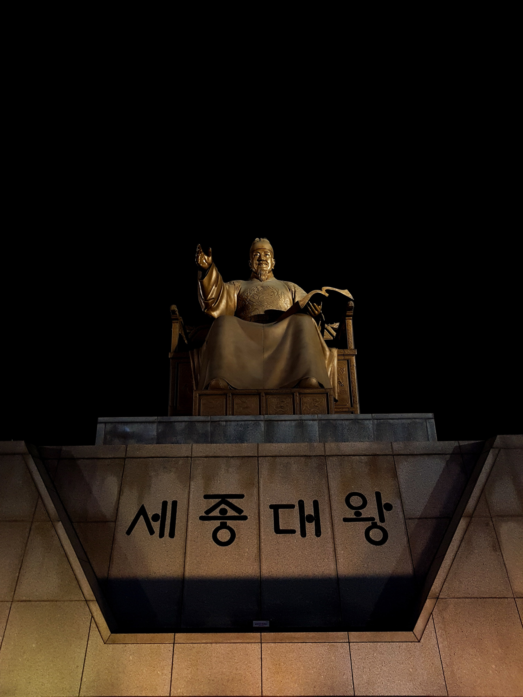

- 글자 소품 브랜드 흐흐디자인
- 글자 주전부리 브랜드 흐흐디자인
- 분자요리와 결합한 글자 주전부리 브랜드 흐흐디자인
글자 소품 브랜드 흐흐디자인
흐흐디자인
은 2016년도부터 본격적으로 시작된 한글 형태의 디자인소품 창작이다.
박상희라는 사람이 시작한 1인 창작 프로젝트였고, 지금도 지속적으로 프로젝트를 진행하고 있다.
첫 시작은 생활소품을 만드는 브랜드로써 창작을 진행했다. 초반에 창작한 형태들은 모두 다 한글 형태였다.
형태가 다 한글이었던 이유에는 비하인드 스토리가 있다.
디자인을 1도 모르고 디자인 프로그램도 몰랐던 그에게 유일한 길은 창의적인 문자인 한글은 창작의 기본으로 사용하는 것이었다.
그렇게 해서 만든 글자 생활소품들은 흐흐디자인이 추구하는 유쾌한 형태를 담아내면서 동시에 실용성도 담아내려 노력을 했다.
그런 생각으로 만든 소품중 가장 처음 디자인했던 촛 촛대는 그 노력의 결실이다.
